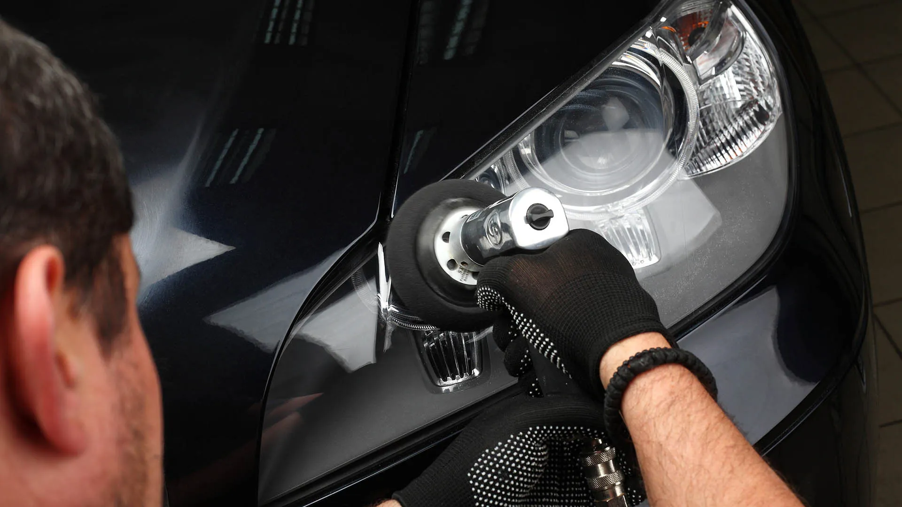
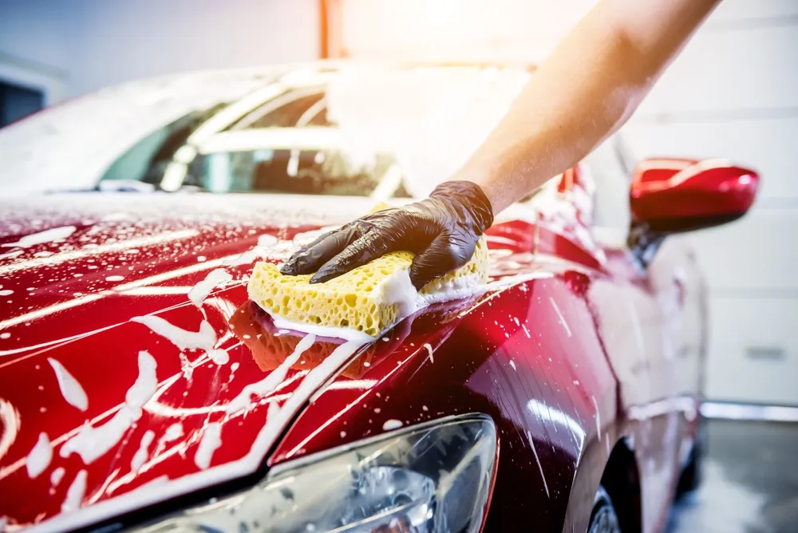
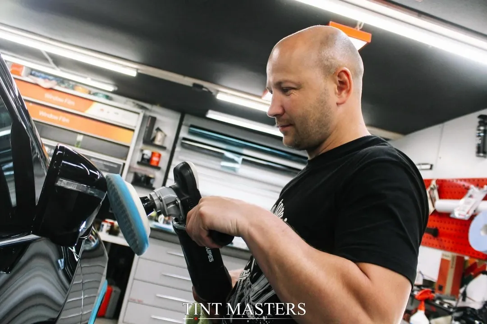
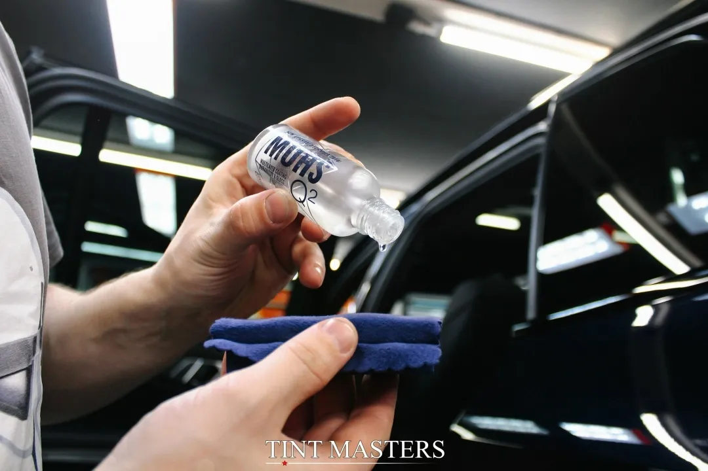

Мы знаем, как важно, чтобы ваш автомобиль выглядел идеально
Верните фарам идеальную прозрачность и блеск

Со временем фары автомобиля тускнеют, покрываются царапинами и мутнеют, что снижает их светопропускание и ухудшает видимость на дороге. Мы предлагаем услугу восстановления прозрачности фар с дальнейшей защитой бронепленкой для долговременного эффекта.
Этот этап подходит для тех случаев, когда полировка уже не может вернуть исходный блеск и прозрачность стекол фар.
Ваши фары снова прозрачные, светят ярко и надежно защищены от любых повреждений!
Запишитесь на услугу уже сегодня и подарите своим фарам новую жизнь.
Комплексная и бережная очистка автомобиля

Детейлинг-мойка с обезжириванием – это комплексная и бережная процедура очистки автомобиля, которая возвращает ему первозданный вид 💎
Включая труднодоступные участки и скрытые полости.
Убираем всю статичную грязь с кузова, включая металлические вкрапления, которые портят ЛКП автомобиля.
Для автомобилей без керамического покрытия и пленок рекомендуем добавить нанесение твердого воска.
Легкая полировка с защитным покрытием для идеального блеска

Полировочный комплекс "Блеск" - легкая полировка с защитным покрытием.
Данное решение подойдет для тех, кто хочет быстро и эффективно улучшить внешний вид своего автомобиля.
Глубокая полировка с максимальной защитой

Полировочный комплекс "Профи" - глубокая полировка с защитным покрытием.
Выбор для тех, кто стремится вернуть автомобилю безупречный вид с максимальной защитой.
Глубокая полировка возвращает кузову первоначальный блеск и глубину цвета.
Двухслойное керамическое покрытие защищает ЛКП на 12-18 месяцев.
Включает уборку салона и защиту стекол для полного преображения автомобиля.
Комплекс идеально подходит для тех, кто стремится к эффекту "зеркального блеска", ценит эстетический вид и заботится о долговременной защите ЛКП.
Запишитесь удобным способом — ответим быстро и подскажем лучший вариант.
Оставьте заявку — мы уточним детали, подберём решение и назовём стоимость. Обычно отвечаем быстро в рабочее время.